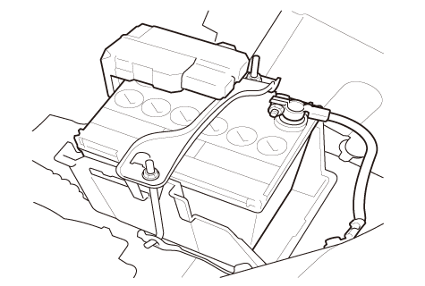
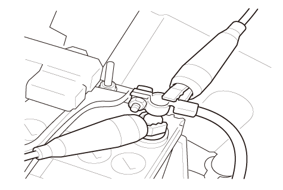
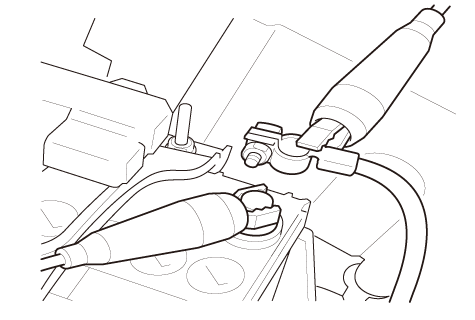

暗電流の測定
使用するサーキット テスタの最大測定電流が10A以上であること。サーキット テスタの破損を防止するため、電流測定中に次の作業は行わないこと。
•
イグニッション スイッチON（II）
•
キーレス、キー シリンダーおよびドア ロック スイッチ操作などでのドア ロック/アンロック
•
電装品が作動し電流が流れるような作業
•
測定中に誤ってバッテリの端子接続を外した場合は、ステップ１に戻り再測定する。
•
次の作業を必要に応じて行う。
-
ドライバ ドア スイッチおよびアシスタント ドア スイッチを取外し、短絡しないようカプラを固定しておく
-
ドライバ ドアおよびアシスタント ドアは開けたまま作業する
暗電流測定前準備1
1-1
すべての電装品が作動していないことを確認する
1-2
セキュリティ アラーム システム装備車は、ボンネット ラッチ スイッチ2Pカプラの接続を外す
セキュリティ アラーム システムにボンネットが閉じていると認識させるため、ボンネット ラッチ スイッチ2Pカプラの接続を外す。
1-3
イグニッション スイッチをON（
II
）にする
1-4
イグニッション スイッチをOFFにしてキーを抜く
1-5
車両から降車しドアを確実に閉める
ドア スイッチを取外した場合は、ドアを開けたまま作業する
。
1-6
トランスミッタのロック ボタンを操作し、ドアをロックする
1-7
セキュリティ アラーム システム装備車：マップ ライトが消灯していることを確認し、セキュリティ アラーム システムがセットされたことを確認する
セキュリティ アラーム システム非装備車：マップ ライトが消灯していることを確認し、すべてのドアが施錠されたことを確認する
1-8
20分以上待ち、ステップ
2
へ進む
暗電流の測定1
2-1
サーキット テスタを接続する前に次の項目を確認する
•
サーキット テスタが直流電流測定モードであること
•
サーキット テスタに差し込まれるプローブの位置が適正であること
•
初めに測定する時は、最大レンジで測定を開始する
2-2
マイナス（－）端子のナット（A）を緩める
以降の作業でバッテリの接続を外さないよう十分注意して作業を行う。
2-3
サーキット テスタのプラス（＋）プローブ（赤）（A）をマイナス（－）端子（B）へ接続する
2-4
マイナス（－）端子をバッテリのマイナス（－）端子から接続を外さないようにずらし、サーキット テスタのマイナス（－）プローブ（黒）（C）をバッテリのマイナス（－）端子に取付ける
2-5
バッテリのマイナス（－）端子からマイナス（－）端子（A）の接続を外す
2-6
暗電流を測定する
暗電流しきい値
（2WD、NAV.非装備車または熱線入りフロント ウインド非装備車）
YOPおよびYOP以外の
装備無し
YOPまたはYOP以外の
装備有り
12.0mA
16.0mA
（2WD、NAV.装備車または熱線入りフロント ウインド装備車、4WD車）
YOPおよびYOP以外の
装備無し
YOPまたはYOP以外の
装備有り
15.0mA
20.0mA
暗電流しきい値を超えた場合は、さらに10分待ってから再測定すること。
◆ 暗電流はしきい値以下か
YES
-
ステップ
4
へ進む
NO
-
ステップ
3
へ進む
装備品確認1
3-1
YOP以外の装備品が取付けられていないことを確認し、取付けられていた場合は、正常に取付けられているか確認する
IG1、IG2、ACCラインに接続されるハーネスが＋Bラインに接続されていないことを確認すること。
◆ 取付け状態は正常か
YES
-
ステップ
6
へ進む
NO
-
異常がある装備品の接続を修正、または必要に応じ装備品を取外し、再度暗電流を測定する
装備品確認2
4-1
YOPおよびYOP以外の装備品が、次のように接続されていない事を確認する
•
バッテリに直接装備品が取付けられている
•
バッテリ ターミナル ヒューズ ボックスとヒューズ ボックス間の電源ラインに装備品が取付けられている
•
ELDの制御範囲以外の電源ラインに装備品が取付けられている
ELDの制御範囲以外の電源ラインに装備品が接続された場合、充放電のバランスが崩れ、走行中およびエンジン回転中のバッテリ上がり、または充電不足により次回のエンジン始動不可につながる。
◆ 装備品の取付けは正常か
YES
-
ステップ
5
へ進む
NO
-
異常がある装備品の接続を修正、または必要に応じ装備品を取外す
バッテリおよびA.C.ジェネレータのターミナルに、ガタ、ゆるみ、浮きがないことを点検する
◆ 取付け状態は正常か
YES
-
A.C.ジェネレータの性能点検
を行い、再度暗電流を測定する。システムが正常であれば、自己放電によるバッテリ上がり。
バッテリの点検
を行い満充電または交換する
NO
-
異常のある部品の修正または交換を行い、再度暗電流を測定する
暗電流の測定2
6-1
サーキット テスタを接続したまま、BACK UPヒューズを取外し、暗電流を測定する
暗電流しきい値
（2WD、NAV.非装備車または熱線入りフロント ウインド非装備車）
YOPおよびYOP以外の
装備無し
YOPまたはYOP以外の
装備有り
3.5mA
7.5mA
（2WD、NAV.装備車または熱線入りフロント ウインド装備車、4WD車）
YOPおよびYOP以外の
装備無し
YOPまたはYOP以外の
装備有り
4.0mA
9.0mA
◆ 暗電流はしきい値以下か
YES
-
ステップ
7
へ進む
NO
-
ステップ
8
へ進む
暗電流の測定3
7-1
サーキット テスタを接続したまま、B-CANラインを地絡させバスオフ状態にする
7-2
BACK UPヒューズを取付ける
暗電流しきい値
（2WD、NAV.非装備車または熱線入りフロント ウインド非装備車）
YOPおよびYOP以外の
装備無し
YOPまたはYOP以外の
装備有り
12.0mA
16.0mA
（2WD、NAV.装備車または熱線入りフロント ウインド装備車、4WD車）
YOPおよびYOP以外の
装備無し
YOPまたはYOP以外の
装備有り
15.0mA
20.0mA
◆ 暗電流はしきい値以下か
YES
-
ウェイク アップ状態のコントロール ユニットを特定する為、地絡を解除し、各ユニットのカプラの接続を１つずつ外す。カプラを外したときに、電流が大きく減少したユニットの入出力の点検を行う
接続を外したカプラは、点検が終了するまで再接続しない。
NO
-
ヒューズ負荷一覧を参考に電流を消費している回路を特定する
暗電流の測定4
8-1
サーキット テスタを接続したまま、IG MAINヒューズを取外す
◆ ヒューズを外したとき、暗電流は減少したか
YES
-
ステップ
9
へ進む
NO
-
ヒューズ ボックス内のヒューズを一つずつ取外し、過度の電流の引き込みを起こしている部品を特定する。回路に異常が無い場合は、スタータ回路およびスタータの単体点検を行う
暗電流の測定5
9-1
IG MAINヒューズを取付ける
9-2
サーキット テスタを接続したまま、イグニッション スイッチ7Pカプラの接続を外す
◆ カプラを外したとき、暗電流は減少したか
YES
-
イグニッション スイッチの不良、イグニッション スイッチを交換する
NO
-
ヒューズ負荷一覧を参考にIG MAINヒューズを経由する回路の電流の引き込み、レア ショートを起こしている回路を特定し修理をする



 使用するサーキット テスタの最大測定電流が10A以上であること。サーキット テスタの破損を防止するため、電流測定中に次の作業は行わないこと。
使用するサーキット テスタの最大測定電流が10A以上であること。サーキット テスタの破損を防止するため、電流測定中に次の作業は行わないこと。
 使用するサーキット テスタの最大測定電流が10A以上であること。サーキット テスタの破損を防止するため、電流測定中に次の作業は行わないこと。
使用するサーキット テスタの最大測定電流が10A以上であること。サーキット テスタの破損を防止するため、電流測定中に次の作業は行わないこと。